<!doctype html><html lang="ko"><head><meta charset="utf-8"><meta name="viewport" content="width=device-width,initial-scale=1"><title>프로젝트 · 박해인</title><style>
:root{--blue:#2e65c5;--muted:#7d8593;--pale:#f2f6fc;--soft:#e3ecfa;--line:#dce5f2}
*{box-sizing:border-box}
html{scroll-behavior:smooth}
body{margin:0;color:#17191e;background:var(--pale);font-family:Arial,"Apple SD Gothic Neo","Malgun Gothic",sans-serif;-webkit-font-smoothing:antialiased}
a{color:inherit;text-decoration:none}
a:focus-visible{outline:3px solid var(--blue);outline-offset:5px}
.eyebrow{font-size:10px;color:var(--blue);letter-spacing:1.5px;font-weight:700;margin:0 0 17px}
@media(prefers-reduced-motion:reduce){html{scroll-behavior:auto}}

/* Tobacco-prevention case study */
.tobacco-case{--case-blue:#5c9ee8;--case-bg:#f3f6f9;--case-text:#1c222a;background:var(--case-bg);color:var(--case-text);min-height:100vh;padding:90px 0 100px}
.tobacco-inner{width:min(1020px,82%);margin:0 auto}.tobacco-eyebrow{margin:0 0 17px;color:var(--case-blue);font-size:10px;font-weight:700;letter-spacing:.5px}.tobacco-case h1{margin:0;font-size:clamp(29px,3.3vw,47px);font-weight:700;line-height:1.35;letter-spacing:-.055em}.tobacco-summary{display:grid;grid-template-columns:1fr 1fr;gap:55px;margin:38px 0 52px}.tobacco-summary p{font-size:13px;line-height:1.8;margin:0;color:#4e5864}.tobacco-summary .en{color:#8b949f}
.tobacco-meta{display:inline-grid;grid-template-columns:repeat(3,auto);gap:28px;background:#fff;border-radius:15px;padding:17px 24px;margin-bottom:22px}.tobacco-meta div{font-size:11px;color:#343b44}.tobacco-meta b{display:block;color:var(--case-blue);font-size:9px;margin-bottom:5px}
.tobacco-card{background:#fff;border-radius:27px;padding:42px;margin-top:22px;box-shadow:0 8px 30px #3c629407}.tobacco-card h2{font-size:clamp(23px,2.2vw,32px);line-height:1.5;letter-spacing:-.045em;margin:0 0 28px}.tobacco-card h2 strong{color:var(--case-blue)}.tobacco-card p{font-size:13px;line-height:1.8;color:#65707d}.tobacco-overview{display:grid;grid-template-columns:38% 62%;gap:30px;align-items:center}.overview-copy h3,.interview h3{font-size:13px;color:#89929d;margin:0 0 14px}.overview-copy ul{margin:0;padding-left:18px;color:#434c57;font-size:13px;line-height:1.9}.overview-images,.deliverables{display:grid;grid-template-columns:1fr 1fr;gap:12px}.overview-images figure,.deliverables figure{margin:0;border:1px solid #edf0f3;border-radius:15px;padding:9px;background:#fafafa;overflow:hidden}.overview-images img,.deliverables img{display:block;width:100%;height:100%;object-fit:contain}.overview-images figure{aspect-ratio:16/10}
.interview-intro{max-width:720px;margin:-12px 0 28px}.interview-cards{display:grid;grid-template-columns:repeat(3,1fr);gap:14px}.voice-card{display:grid;grid-template-columns:46px 1fr;gap:15px;align-items:start;background:#f6f7f8;border-radius:17px;padding:21px}.voice-avatar{width:46px;height:46px;border-radius:50%;display:grid;place-items:center;background:#dceafa;color:var(--case-blue);font-size:12px;font-weight:750}.voice-card blockquote{margin:0}.voice-card blockquote strong{display:inline;box-decoration-break:clone;-webkit-box-decoration-break:clone;background:#dcecff;color:#317ccf;padding:2px 4px;font-size:13px;line-height:1.75}.voice-card blockquote p{font-size:11px;line-height:1.65;margin:10px 0 0;color:#69737e}.voice-card cite{display:block;font-size:9px;font-style:normal;color:#a0a7af;margin-top:9px}
.solution-head{display:grid;grid-template-columns:1fr 1.4fr;gap:35px;align-items:end;margin-bottom:24px}.solution-head h2{margin:0}.solution-head p{margin:0}.direction-labels{display:grid;grid-template-columns:1fr 46px 1.55fr;gap:12px;margin-bottom:9px}.direction-labels span:first-child{color:#b2b8bf}.direction-labels span:last-child{grid-column:3;color:var(--case-blue)}.direction-labels span{font-size:15px;font-weight:700}.direction-board{display:grid;gap:10px}.direction-row{display:grid;grid-template-columns:1fr 46px 1.55fr;gap:12px;align-items:stretch}.direction-problem,.direction-solution{border-radius:16px;padding:20px 23px;display:flex;align-items:center;font-size:13px;line-height:1.6}.direction-problem{background:#f1f2f3;color:#5d6670}.direction-arrow{display:grid;place-items:center;color:#c2c8ce;font-size:22px}.direction-solution{background:#fff;border:1px solid #e6edf4;color:#3f4853;box-shadow:0 5px 18px #385a8008}.direction-solution b{color:var(--case-blue)}.deliverables{display:grid;grid-template-columns:1fr 1fr;gap:12px;margin-top:26px}.deliverables figure{aspect-ratio:16/9;background:#f8f8f7}.tobacco-back{display:flex;justify-content:center;margin-top:42px}.tobacco-back a{border:1px solid #d8e1e9;background:#fff;border-radius:99px;padding:13px 24px;font-size:12px;color:#536171}
@media(max-width:760px){.tobacco-case{padding:60px 0}.tobacco-inner{width:86%}.tobacco-summary{grid-template-columns:1fr;gap:15px;margin:25px 0 30px}.tobacco-summary .en{display:none}.tobacco-meta{width:100%;grid-template-columns:1fr;gap:12px}.tobacco-card{padding:24px;border-radius:20px}.tobacco-overview{grid-template-columns:1fr}.overview-images,.deliverables,.interview-cards{grid-template-columns:1fr}.solution-head{grid-template-columns:1fr;gap:8px}.direction-labels{display:none}.direction-row{grid-template-columns:1fr}.direction-arrow{transform:rotate(90deg);height:24px}.direction-problem,.direction-solution{padding:17px}.tobacco-card h2{font-size:23px}}

/* Shared case-study system for the remaining projects */
.portfolio-case{background:var(--pale);min-height:100vh;padding:86px 0 95px}.portfolio-inner{width:min(1040px,84%);margin:0 auto}.portfolio-header{display:grid;grid-template-columns:1fr 1.08fr;gap:48px;align-items:center;margin-bottom:24px}.portfolio-header h1{font-size:clamp(31px,3.5vw,51px);line-height:1.28;letter-spacing:-.055em;margin:0 0 20px}.portfolio-header .case-lead{font-size:14px;line-height:1.8;color:#69727d;margin:0}.portfolio-meta{display:flex;flex-wrap:wrap;gap:22px;margin-top:28px}.portfolio-meta span{font-size:11px;color:#525c67}.portfolio-meta b{display:block;color:var(--blue);font-size:9px;margin-bottom:5px;letter-spacing:.4px}.hero-media{margin:0;background:#fff;border-radius:22px;padding:18px;box-shadow:0 7px 26px #213c5d08}.hero-media img{display:block;width:100%;height:auto;max-height:340px;object-fit:contain}.case-panel{background:#fff;border-radius:27px;padding:42px;margin-top:22px;box-shadow:0 8px 30px #263f5d08}.case-panel h2{font-size:clamp(23px,2.25vw,33px);line-height:1.5;letter-spacing:-.045em;margin:0 0 27px}.case-panel h2 strong{color:var(--blue)}.case-panel p{font-size:13px;line-height:1.8;color:#66717d}.panel-intro{max-width:760px;margin:-12px 0 27px}.media-pair,.media-trio{display:grid;gap:13px}.media-pair{grid-template-columns:1fr 1fr}.media-trio{grid-template-columns:repeat(3,1fr)}.media-tile{margin:0;border-radius:16px;background:#f8f8f7;border:1px solid #edf0f2;padding:10px;overflow:hidden}.media-tile img{display:block;width:100%;height:100%;max-height:270px;object-fit:contain}.media-tile figcaption{font-size:9px;color:#969da6;margin:9px 5px 1px}.insight-flow{display:grid;grid-template-columns:repeat(4,1fr);align-items:center;gap:12px}.flow-node{min-height:145px;border:1px solid var(--soft);border-radius:50%;display:flex;flex-direction:column;align-items:center;justify-content:center;text-align:center;padding:18px;font-size:13px;line-height:1.55;color:#4d5762}.flow-node b{color:var(--blue);margin-bottom:7px}.flow-node.result{background:var(--blue);border-color:var(--blue);color:#fff}.flow-node.result b{color:#fff}.simple-steps{display:grid;grid-template-columns:repeat(3,1fr);gap:13px}.step-card{background:#f4f5f6;border-radius:16px;padding:23px}.step-card small{color:var(--blue);font-weight:700}.step-card h3{font-size:16px;margin:9px 0}.step-card p{font-size:12px;margin:0}.comparison{display:grid;gap:10px}.comparison-head,.comparison-row{display:grid;grid-template-columns:1fr 150px 1.45fr;gap:10px}.comparison-head span{font-size:11px;font-weight:700;color:#969da6}.comparison-head span:nth-child(2){text-align:center}.comparison-head span:last-child{color:var(--blue)}.compare-before,.compare-action,.compare-after{padding:20px;border-radius:14px;display:flex;align-items:center;font-size:13px;line-height:1.55}.compare-before{background:#343a41;color:#fff}.compare-action{justify-content:center;text-align:center;border:1px solid var(--blue);color:#48535e}.compare-after{background:var(--blue);color:#fff}.result-bars{display:grid;grid-template-columns:1fr 1.2fr;gap:35px;align-items:center}.bar-copy h3{font-size:19px;margin:0 0 10px}.bar-copy p{margin:0}.bar-chart{height:245px;display:flex;align-items:flex-end;gap:18px;padding:25px 25px 30px;border-left:1px solid #d9e0e6;border-bottom:1px solid #d9e0e6}.bar-item{flex:1;display:flex;flex-direction:column;justify-content:flex-end;align-items:center;height:100%;gap:8px}.bar-item i{display:block;width:100%;max-width:62px;background:linear-gradient(to top,var(--blue),var(--soft));border-radius:10px 10px 0 0}.bar-item b{font-size:12px;color:var(--blue)}.bar-item span{font-size:9px;color:#8d959f}.action-result{display:grid;grid-template-columns:1.6fr 50px 1fr;gap:12px;align-items:stretch;margin-bottom:11px}.action-box,.result-box{padding:21px;border-radius:14px;display:flex;align-items:center;font-size:13px;line-height:1.55}.action-box{background:#f2f3f4;color:#515b66}.result-box{background:var(--blue);color:#fff;justify-content:center;font-weight:700}.action-result>span{display:grid;place-items:center;color:#b1b8c0}.case-return{display:flex;justify-content:center;margin-top:40px}.case-return a{background:#fff;border:1px solid var(--soft);border-radius:99px;padding:13px 24px;font-size:12px;color:var(--blue)}
@media(max-width:760px){.portfolio-case{padding:55px 0}.portfolio-inner{width:86%}.portfolio-header{grid-template-columns:1fr;gap:25px}.portfolio-header h1{font-size:34px}.hero-media{padding:12px}.case-panel{padding:24px;border-radius:20px}.media-pair,.media-trio,.simple-steps,.result-bars{grid-template-columns:1fr}.insight-flow{grid-template-columns:1fr}.flow-node{border-radius:18px;min-height:105px}.comparison-head{display:none}.comparison-row{grid-template-columns:1fr}.compare-action{min-height:55px}.action-result{grid-template-columns:1fr}.action-result>span{height:24px;transform:rotate(90deg)}.bar-chart{height:220px}.case-panel h2{font-size:23px}}
</style></head><body>
<main id="case-study"></main><script>const projects=[['맛난이 챌린지','CONTENT CAMPAIGN','못생긴 농산물은 맛도 없을까요?','농산물의 외형에 대한 편견을 일상의 식사 이야기로 풀어낸 캠페인.'],['위뮤즈 오프라인 마케팅','EXPERIENCE MARKETING','좋은 공연을 더 편하게 즐길 수 없을까요?','관객의 불편에서 출발해 공연 경험과 플랫폼 홍보를 연결한 제안.'],['꼬모냉장고 SNS 마케팅','SNS MARKETING','소비자에게 어떤 메시지가 닿을까요?','데이터 분석과 콘텐츠 기획·운영 경험.'],['전자담배 근절 캠페인','CAMPAIGN PLANNING','청소년의 일상에서 어떤 접점을 찾을 수 있을까요?','타깃의 생활을 분석한 캠페인 기획.'],['통계청 교육영상','EDUCATIONAL CONTENT','어려운 정보를 어떻게 쉽게 전달할까요?','학습자의 관점에서 구성한 교육영상.']];const n=Number(new URLSearchParams(location.search).get('id'));const i=Number.isInteger(n)&&n>=1&&n<=5?n-1:0,p=projects[i];document.title=p[0]+' · 박해인';
const themes=[['#E56548','#F5F1E8','#FBE2D9'],['#7955E8','#F0EEFA','#E8E0FF'],['#298658','#EDF2ED','#DCEFE4'],['#3475D5','#EDF2F8','#DCE9FA'],['#D97726','#FBF0E8','#F8DFC9']];
const t=themes[i];['--blue','--pale','--soft'].forEach((v,k)=>document.documentElement.style.setProperty(v,t[k]));
const tobaccoCase=`<article class="tobacco-case"><div class="tobacco-inner"><header><p class="tobacco-eyebrow">TARGET RESEARCH</p><h1>청소년은 전자담배를<br>왜 가볍게 받아들였을까요?</h1><div class="tobacco-summary"><p>청소년의 생활과 흡연 인식을 살펴보기 위해 통계자료와 뉴스 기사, 인터뷰 내용을 분석했습니다. 기존의 형식적인 예방 교육이 실제 행동 변화로 이어지기 어려운 이유를 찾고, 일상에서 만나는 캠페인 방향을 설정했습니다.</p><p class="en">To understand how teenagers perceive e-cigarettes, we reviewed statistics, news coverage and interview responses, then translated those findings into an experience-led campaign.</p></div><div class="tobacco-meta"><div><b>Period</b>23.09.01 – 23.11.03</div><div><b>Target</b>10대 청소년</div><div><b>Purpose</b>전자담배 인식 개선</div></div></header>
<section class="tobacco-card"><h2>형식적인 예방 교육보다 <strong>일상적인 접점과<br>직접 참여하는 경험</strong>이 필요했습니다.</h2><div class="tobacco-overview"><div class="overview-copy"><h3>OVERVIEW</h3><ul><li>청소년의 왜곡된 전자담배 인식 개선</li><li>기존 흡연 예방 교육의 한계 보완</li><li>일상적인 공간과 또래 관계를 활용한 전략</li></ul></div><div class="overview-images"><figure></figure><figure></figure></div></div></section>
<section class="tobacco-card"><p class="tobacco-eyebrow">IN-DEPTH INTERVIEW</p><h2>청소년들은 전자담배와 예방 캠페인을<br><strong>어떻게 받아들이고 있을까요?</strong></h2><p class="interview-intro">청소년의 하루와 흡연 계기, 기존 캠페인에 대한 인식을 질문했습니다. 답변에서 반복해서 나타난 학교·친구·체험이라는 키워드를 캠페인 방향에 반영했습니다.</p><div class="interview-cards"><article class="voice-card"><span class="voice-avatar">01</span><blockquote><strong>“학교와 학원에서<br>대부분의 시간을 보내요.”</strong><p>쉬는 시간에는 웹툰을 보거나 친구들과 게임을 하며 시간을 보내요.</p><cite>일상과 주요 활동 공간</cite></blockquote></article><article class="voice-card"><span class="voice-avatar">02</span><blockquote><strong>“친구의 권유로<br>처음 전자담배를 피웠어요.”</strong><p>달콤한 향 때문에 일반 담배보다 부담이 적다고 느꼈어요.</p><cite>흡연 계기와 또래 영향</cite></blockquote></article><article class="voice-card"><span class="voice-avatar">03</span><blockquote><strong>“예방 캠페인은 지루해서<br>기억에 남지 않아요.”</strong><p>보고 듣는 교육보다 직접 참여할 수 있는 활동이 더 좋아요.</p><cite>기존 교육에 대한 반응</cite></blockquote></article></div></section>
<section class="tobacco-card"><div class="solution-head"><h2>인터뷰에서 찾은 문제를<br><strong>세 가지 전략</strong>으로 연결했습니다.</h2><p>청소년의 생활 동선과 또래 관계, 기존 교육에 대한 반응을 바탕으로 캠페인의 접점과 참여 방식을 구체화했습니다.</p></div><div class="direction-labels"><span>Key Finding</span><span>Campaign Direction</span></div><div class="direction-board"><div class="direction-row"><div class="direction-problem">대부분의 시간을 학교와 학원에서 보냅니다.</div><div class="direction-arrow">→</div><div class="direction-solution">청소년과 가장 가까운 공간을 활용하는 <b>&nbsp;학교 중심 캠페인</b></div></div><div class="direction-row"><div class="direction-problem">친구의 권유와 또래 분위기가 행동에 영향을 줍니다.</div><div class="direction-arrow">→</div><div class="direction-solution">함께 대화하고 반응하도록 유도하는 <b>&nbsp;집단 대상 캠페인</b></div></div><div class="direction-row"><div class="direction-problem">일방적인 예방 교육은 지루하고 기억에 남지 않습니다.</div><div class="direction-arrow">→</div><div class="direction-solution">보고 듣는 것을 넘어 직접 참여하는 <b>&nbsp;체험 중심 캠페인</b></div></div></div><div class="deliverables"><figure></figure><figure>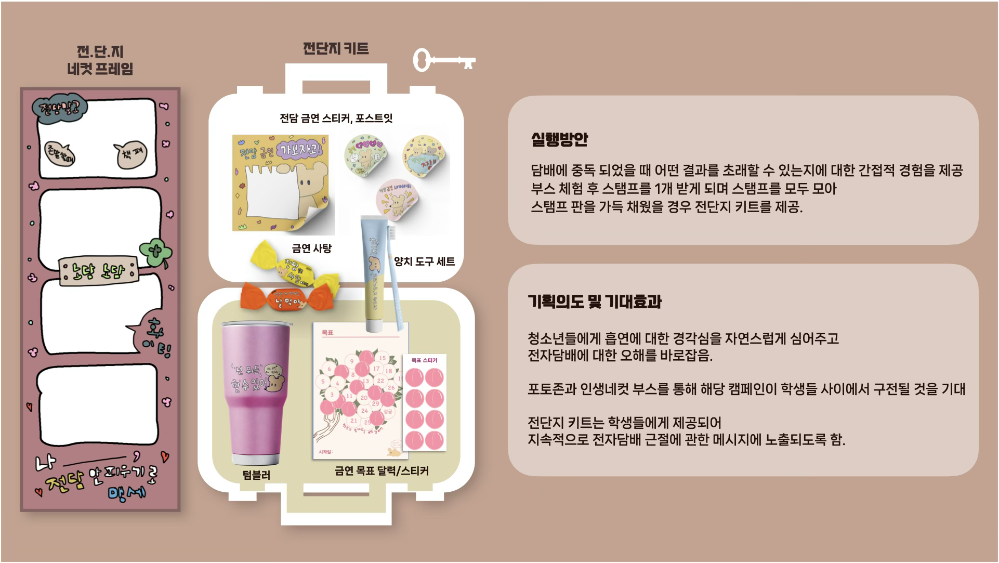</figure></div></section><div class="tobacco-back"><a href="index.html#projects">프로젝트 목록</a></div></div></article>`;
const tasteCase=`<article class="portfolio-case"><div class="portfolio-inner"><header class="portfolio-header"><div><p class="eyebrow">CONTENT CAMPAIGN</p><h1>외면받던 농산물을<br><strong>맛있는 이야기</strong>로 바꾸다</h1><p class="case-lead">흠집이 있다는 이유로 선택받지 못하는 농산물의 가치를, 하루 세 끼를 보여주는 친숙한 캠페인 영상으로 전달했습니다.</p><div class="portfolio-meta"><span><b>PERIOD</b>2023.09.01 - 09.24</span><span><b>ROLE</b>콘셉트 도출 · 시나리오 · 프로젝트 관리</span><span><b>RESULT</b>MBC 모두의 챌린지 방영</span></div></div><figure class="hero-media">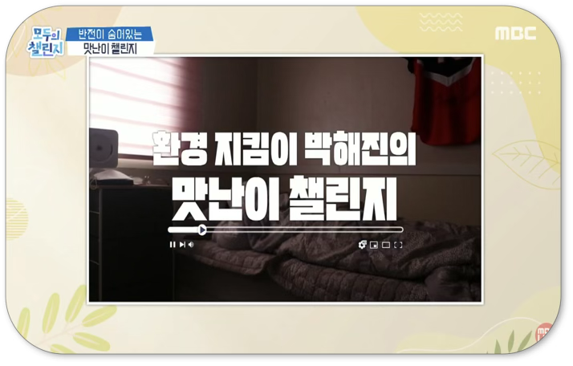</figure></header><section class="case-panel"><h2>사회적 이슈와 소비 트렌드에서<br><strong>캠페인의 접점</strong>을 찾았습니다.</h2><div class="insight-flow"><div class="flow-node"><b>RESEARCH</b>고물가와 금사과 등<br>농산물 가격 부담</div><div class="flow-node"><b>TREND</b>무지출 챌린지와<br>절약형 콘텐츠</div><div class="flow-node"><b>INSIGHT</b>저렴하지만 영양은<br>그대로인 못난이 농산물</div><div class="flow-node result"><b>IDEA</b>하루 세 끼를 해결하는<br>맛난이 챌린지</div></div></section><section class="case-panel"><h2>“못난 것이 아니라 <strong>맛난 거다!</strong>”</h2><p class="panel-intro">국수, 카레 등 익숙한 한 끼가 모두 못난이 농산물로 만들어졌다는 반전을 활용했습니다. 정보 전달에 그치지 않고, 시청자가 재미있게 따라갈 수 있는 하루의 이야기로 구성했습니다.</p><div class="simple-steps"><article class="step-card"><small>01</small><h3>콘셉트</h3><p>외형의 편견을 맛의 반전으로 전환</p></article><article class="step-card"><small>02</small><h3>스토리</h3><p>주인공의 하루 세 끼를 따라가는 구성</p></article><article class="step-card"><small>03</small><h3>메시지</h3><p>합리적 소비와 농산물 가치 전달</p></article></div><div class="media-pair" style="margin-top:22px"><figure class="media-tile">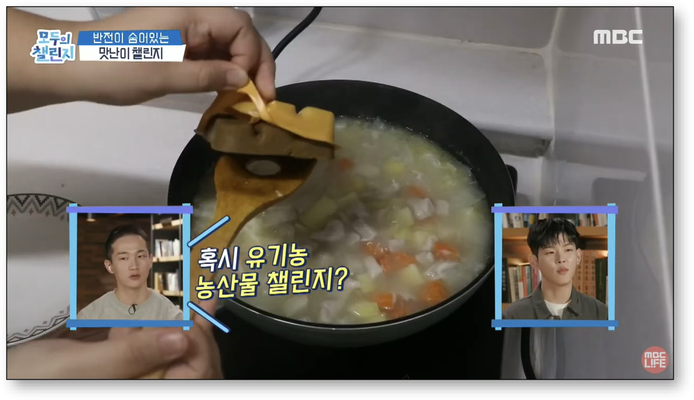<figcaption>하루 세 끼를 보여주는 영상 장면</figcaption></figure><figure class="media-tile">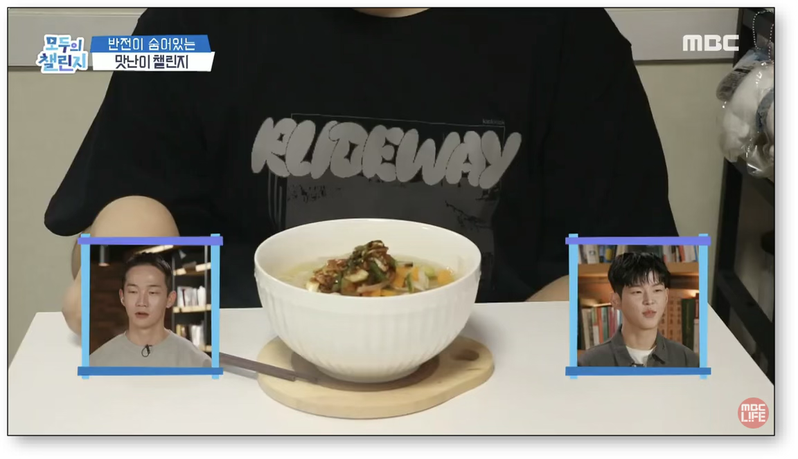<figcaption>못난이 농산물의 맛있는 변신</figcaption></figure></div></section><div class="case-return"><a href="index.html#projects-more">프로젝트 목록</a></div></div></article>`;

const wemuseCase=`<article class="portfolio-case"><div class="portfolio-inner"><header class="portfolio-header"><div><p class="eyebrow">EXPERIENCE MARKETING</p><h1>공연의 불편을 줄이고<br><strong>브랜드 경험</strong>을 더하다</h1><p class="case-lead">야외 버스킹의 불편과 플랫폼의 낮은 인지도를 함께 해결할 수 있도록, 관람 환경과 현장 콘텐츠를 연결한 오프라인 마케팅을 제안했습니다.</p><div class="portfolio-meta"><span><b>PERIOD</b>2023.11.24 - 11.25</span><span><b>TARGET</b>20-30대 관객</span><span><b>ROLE</b>기획 · 프레젠테이션</span></div></div><figure class="hero-media"></figure></header><section class="case-panel"><h2>현장에서 발견한 불편을<br><strong>세 가지 개선 방향</strong>으로 정리했습니다.</h2><div class="simple-steps"><article class="step-card"><small>PAIN POINT 01</small><h3>브랜드 노출 부족</h3><p>공연 이후 플랫폼을 기억할 접점이 부족했습니다.</p></article><article class="step-card"><small>PAIN POINT 02</small><h3>관람 환경의 불편</h3><p>추위와 딱딱한 좌석 때문에 공연에 집중하기 어려웠습니다.</p></article><article class="step-card"><small>PAIN POINT 03</small><h3>관객 반응의 소멸</h3><p>현장 반응을 콘텐츠로 남길 장치가 부족했습니다.</p></article></div><div class="media-pair" style="margin-top:22px"><figure class="media-tile">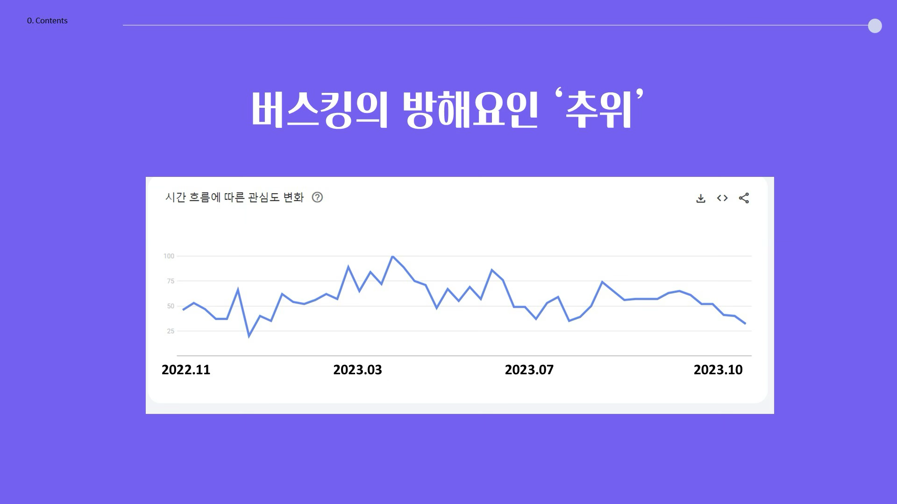<figcaption>플랫폼 인지도와 검색 흐름 확인</figcaption></figure><figure class="media-tile">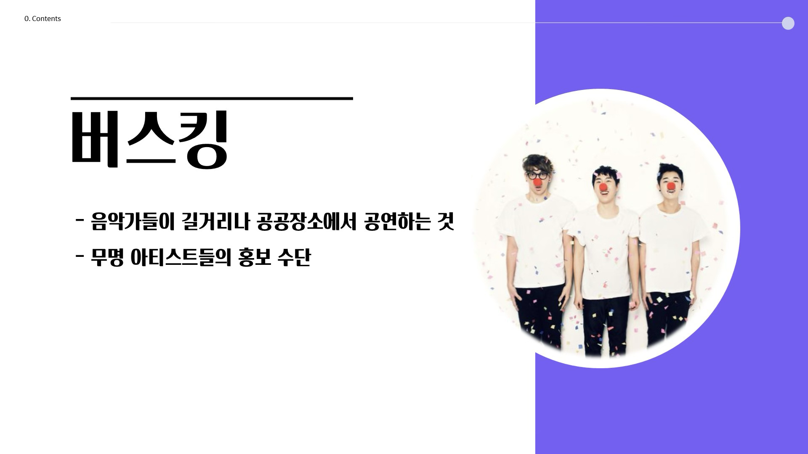<figcaption>오프라인 공연 환경 조사</figcaption></figure></div></section><section class="case-panel"><h2>불편을 줄이는 동시에<br><strong>플랫폼이 기억되는 경험</strong>을 설계했습니다.</h2><div class="comparison"><div class="comparison-head"><span>Before</span><span>Solution</span><span>Expected Effect</span></div><div class="comparison-row"><div class="compare-before">현장에서 브랜드가 자연스럽게 노출될 기회가 부족함</div><div class="compare-action">대여 물품에<br>브랜드 요소 적용</div><div class="compare-after">현장 사진과 SNS 콘텐츠를 통한 브랜드 노출</div></div><div class="comparison-row"><div class="compare-before">추위와 불편한 좌석으로 공연 관람이 불편함</div><div class="compare-action">방석과 담요 대여</div><div class="compare-after">편안한 환경에서 공연에 몰입하고 만족도 향상</div></div><div class="comparison-row"><div class="compare-before">관객 반응과 아티스트 홍보 수단이 부족함</div><div class="compare-action">응원 물품과<br>스케치 영상</div><div class="compare-after">아티스트 만족도와 플랫폼 충성도 확보</div></div></div><div class="media-pair" style="margin-top:22px"><figure class="media-tile">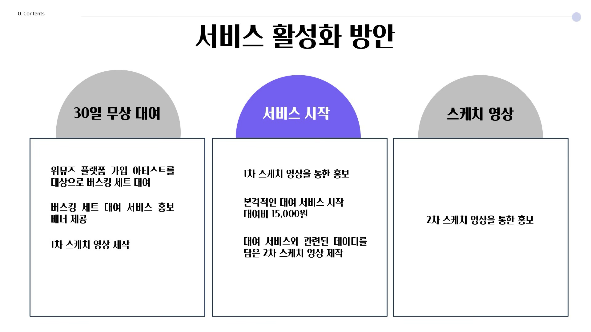<figcaption>서비스 시작부터 소재 생성까지의 활성화 방안</figcaption></figure><figure class="media-tile"><figcaption>공연 경험과 플랫폼을 연결하는 브랜드 접점</figcaption></figure></div></section><div class="case-return"><a href="index.html#projects">프로젝트 목록</a></div></div></article>`;

const ccomoCase=`<article class="portfolio-case"><div class="portfolio-inner"><header class="portfolio-header"><div><p class="eyebrow">SNS MARKETING</p><h1>데이터에서 출발해<br><strong>설득력 있는 콘텐츠</strong>를 만들다</h1><p class="case-lead">미흡했던 SNS 운영을 진단하고, 검색 데이터와 경쟁 계정 분석을 바탕으로 소비자 관점의 메시지와 콘텐츠를 기획했습니다.</p><div class="portfolio-meta"><span><b>PERIOD</b>2025.07.14 - 09.07</span><span><b>TARGET</b>30대 소비자</span><span><b>ROLE</b>데이터 분석 · SNS 콘텐츠 기획</span></div></div><figure class="hero-media">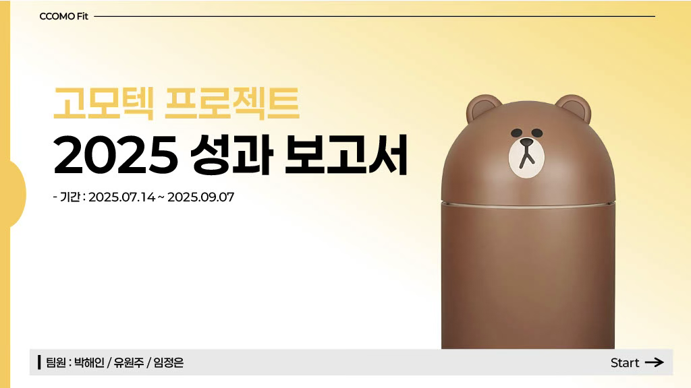</figure></header><section class="case-panel"><h2>소비자의 의심을 해소하기 위해<br><strong>분석부터 메시지까지</strong> 연결했습니다.</h2><div class="simple-steps"><article class="step-card"><small>01 · DATA</small><h3>검색 흐름 분석</h3><p>네이버 데이터랩과 키워드 자료로 소비자의 관심사를 파악했습니다.</p></article><article class="step-card"><small>02 · BENCHMARK</small><h3>경쟁 계정 분석</h3><p>유사 브랜드의 콘텐츠와 반응을 비교해 개선점을 찾았습니다.</p></article><article class="step-card"><small>03 · CONTENT</small><h3>메시지 설계</h3><p>기업 설명보다 소비자의 질문에 답하는 콘텐츠를 제작했습니다.</p></article></div><div class="media-pair" style="margin-top:22px"><figure class="media-tile">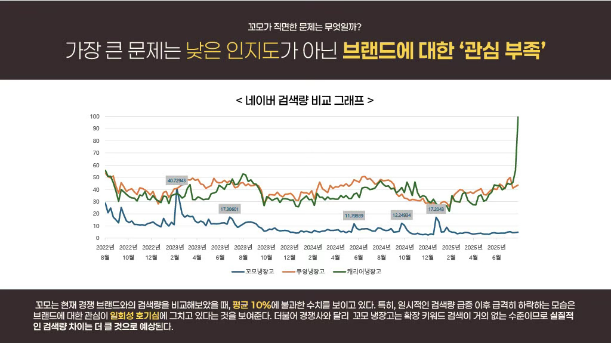<figcaption>브랜드가 아닌 소비자의 관심 키워드 탐색</figcaption></figure><figure class="media-tile">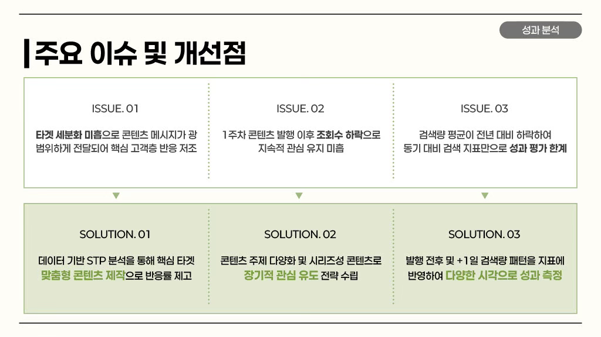<figcaption>운영 이슈와 콘텐츠 개선 방향</figcaption></figure></div></section><section class="case-panel"><h2>콘텐츠별 반응을 비교해<br><strong>다음 운영의 기준</strong>을 만들었습니다.</h2><div class="result-bars"><div class="bar-copy"><h3>콘텐츠 노출 성과</h3><p>성과 보고서에 기록된 조회 수를 비교했습니다. 소비자가 궁금해하는 정보와 제품 사용 맥락을 담은 콘텐츠에서 상대적으로 높은 노출을 확인했습니다.</p></div><div class="bar-chart"><div class="bar-item"><b>514</b><i style="height:100%"></i><span>콘텐츠 A</span></div><div class="bar-item"><b>361</b><i style="height:70%"></i><span>콘텐츠 B</span></div><div class="bar-item"><b>256</b><i style="height:50%"></i><span>콘텐츠 C</span></div><div class="bar-item"><b>7</b><i style="height:5%"></i><span>콘텐츠 D</span></div></div></div><div class="media-trio" style="margin-top:25px"><figure class="media-tile">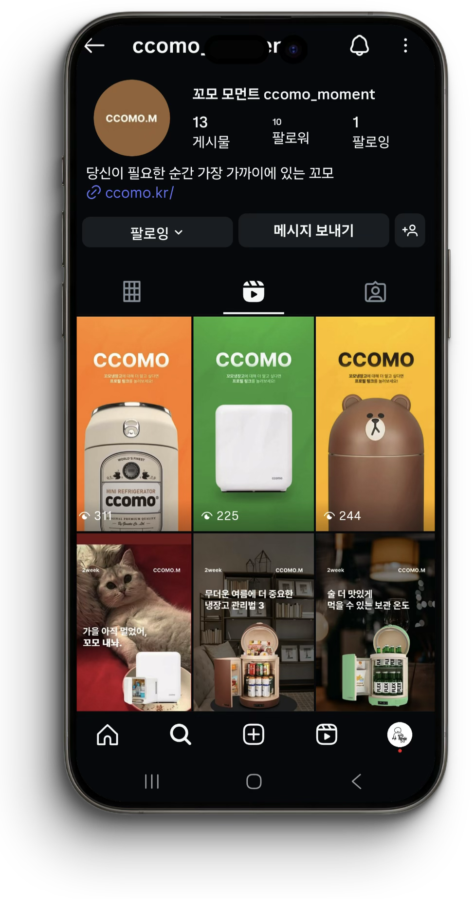</figure><figure class="media-tile">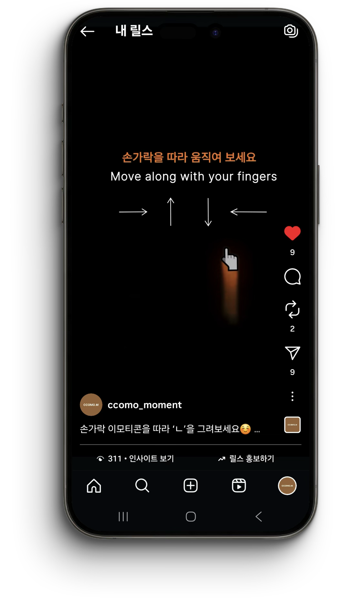</figure><figure class="media-tile">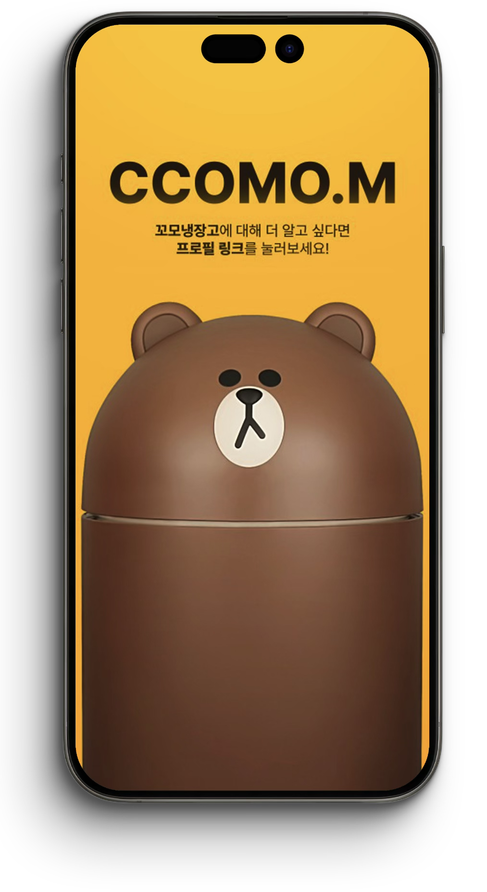</figure></div></section><div class="case-return"><a href="index.html#projects">프로젝트 목록</a></div></div></article>`;

const statsCase=`<article class="portfolio-case"><div class="portfolio-inner"><header class="portfolio-header"><div><p class="eyebrow">EDUCATIONAL CONTENT</p><h1>전문 정보를<br><strong>학습자의 언어</strong>로 바꾸다</h1><p class="case-lead">양돈 전문 지식을 처음 접하는 학습자도 이해할 수 있도록 쉬운 표현과 친근한 비주얼로 통계청 교육영상을 제작했습니다.</p><div class="portfolio-meta"><span><b>PERIOD</b>2025.01.02 - 02.20</span><span><b>ROLE</b>시나리오 · 콘텐츠 제작 · 프로젝트 관리</span><span><b>CLIENT</b>동남지방통계청</span></div></div><figure class="hero-media">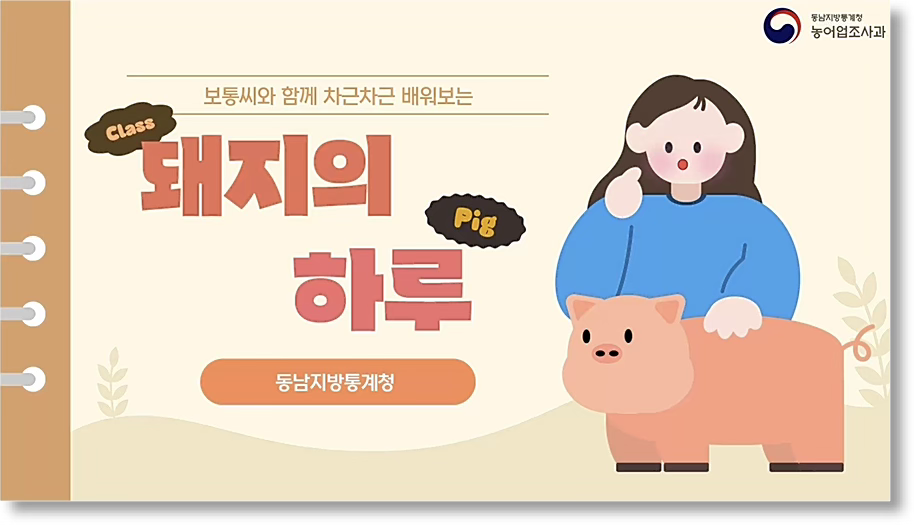</figure></header><section class="case-panel"><h2>제한된 제작 환경에서도<br><strong>이해도와 완성도</strong>를 높였습니다.</h2><p class="panel-intro">전문 자료를 충분히 이해한 뒤, 기관의 요구사항과 학습자의 눈높이를 함께 만족시키는 방향으로 제작 과정을 조정했습니다.</p><div class="action-result"><div class="action-box">양돈 전문 매체와 관련 논문을 통해 개념 이해도를 높였습니다.</div><span>→</span><div class="result-box">전문성 향상</div></div><div class="action-result"><div class="action-box">레퍼런스와 피드백을 반영해 기관에 적합한 문구와 비주얼을 기획했습니다.</div><span>→</span><div class="result-box">요구사항 반영</div></div><div class="action-result"><div class="action-box">강의와 서적을 참고해 영상 제작 툴의 활용도를 높였습니다.</div><span>→</span><div class="result-box">완성도 상승</div></div></section><section class="case-panel"><h2>보통씨와 함께 배우는<br><strong>돼지의 하루</strong></h2><p class="panel-intro">시청자의 이해를 돕고 흥미를 유지할 수 있도록 캐릭터와 퀴즈를 활용했습니다. 어려운 전문 용어는 쉬운 문장과 시각 자료로 풀어냈습니다.</p><div class="media-pair"><figure class="media-tile">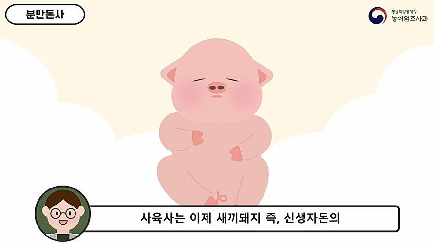<figcaption>캐릭터를 활용한 친근한 정보 전달</figcaption></figure><figure class="media-tile">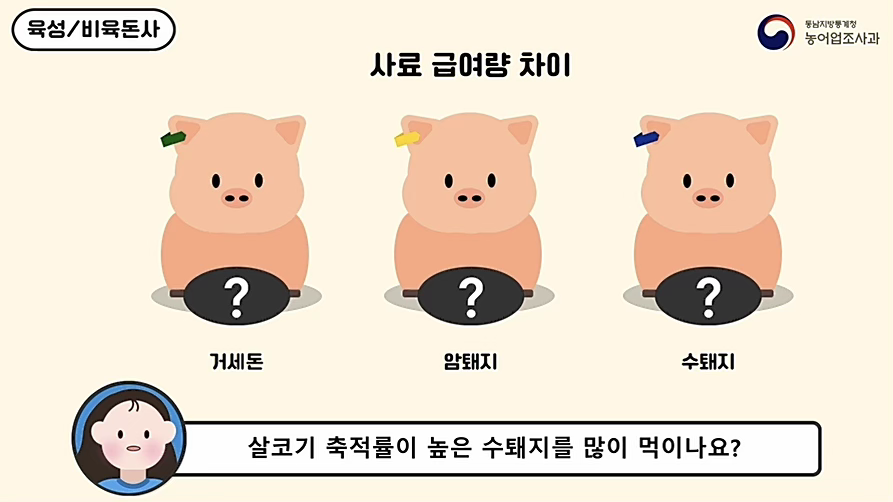<figcaption>학습 내용을 확인하는 참여형 퀴즈</figcaption></figure></div></section><div class="case-return"><a href="index.html#projects-more">프로젝트 목록</a></div></div></article>`;

const caseViews=[tasteCase,wemuseCase,ccomoCase,tobaccoCase,statsCase];
document.querySelector('#case-study').innerHTML=caseViews[i]||defaultCase;
</script></body></html>
